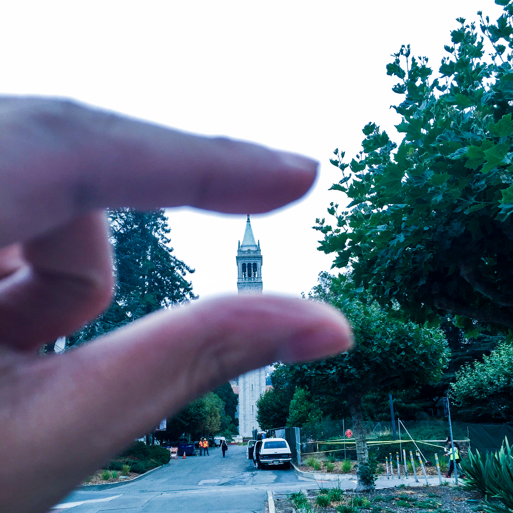
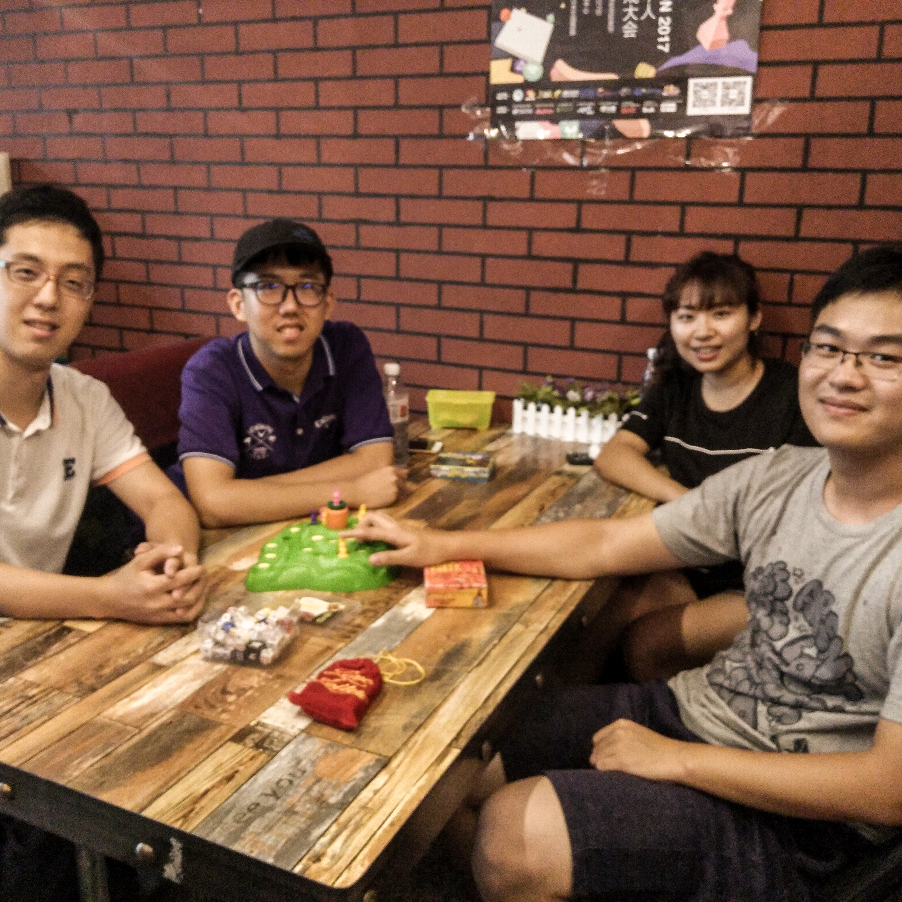
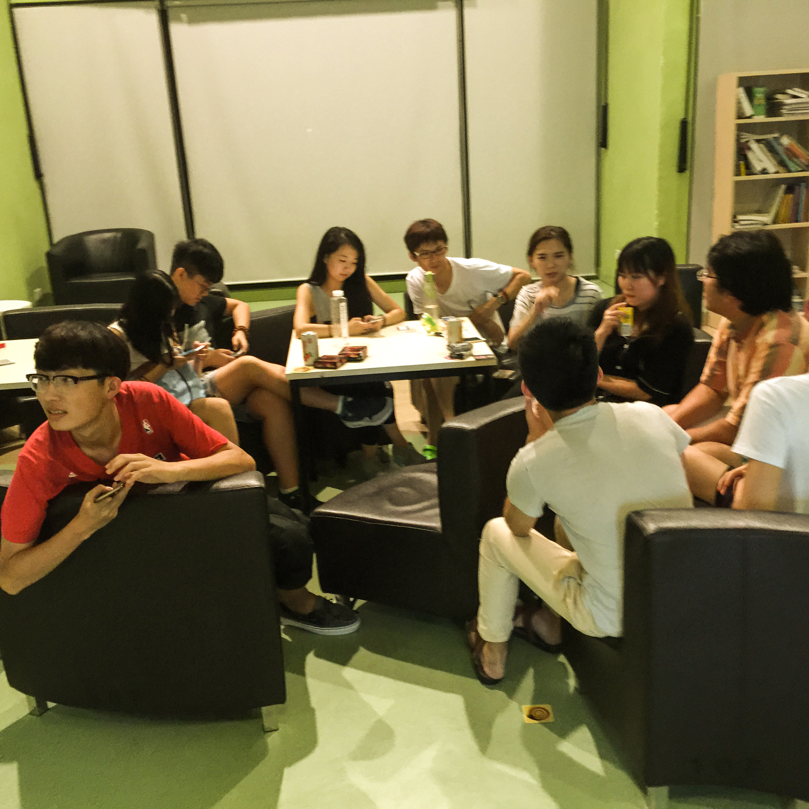
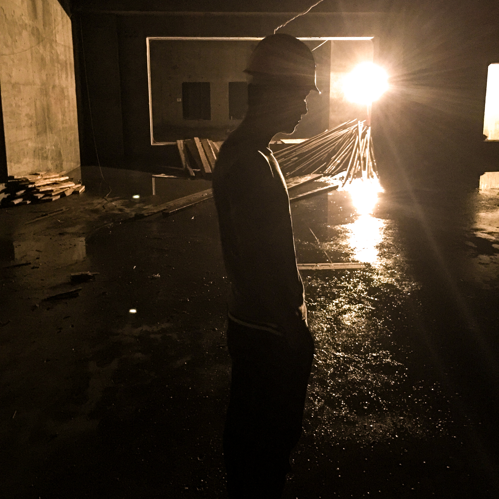
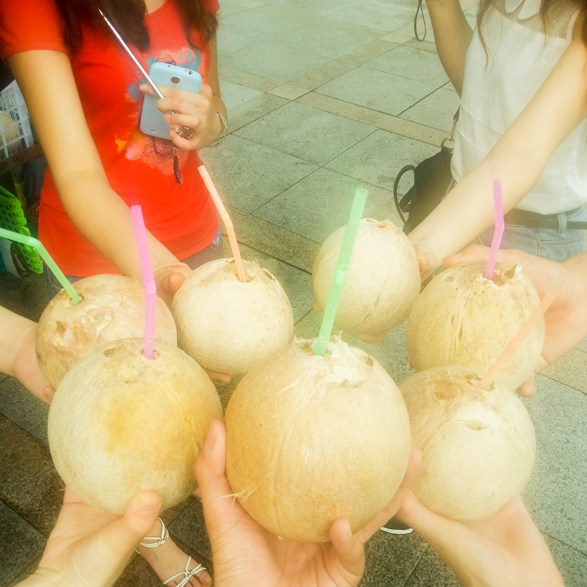

{kind=link}
Lifestyle
A colorful life
I love using photos to record my life.
-
I took this photo from Fishermans Wharf at San Francisco. It was just after the midterm when the darkest period paused for a while. Just ran away from Berkeley to SF! Feeling so relaxed!
-
While I am not a big fan of booze, I do love going to the bar with my friends to relax myself or celebrate some events. This was a pretty nice bar at San Francisco and I was drunk that day with my friend King Wang. Way cool!
-

I took this photo on my first day at UC Berkeley. It is so lucky and proud to be a Cal member. See, the Sather Tower is so small that I was squeezing it! Go Bears!
-
This is the ghost version of me. Was it Halloween? No. Then why making up like that? Well, actually it was just a Photoshop work. BAZINGA!
-

I really enjoy playing board games with my friends. People is this photo were Hudson, Walt, Weiyizhi and me. I remembered we played a whole day from really early in the morning to the midnight. BTW, we were all badasses!
Photo credit: the owner of YOY Club -

It was so sad that I had not been to Forbidden City when I was a child. This photo was taken when I went to Beijing with my advisor Prof. Xuefeng Zhao working on the deep learning project. It was fun, both the project and the trip.
-

This photo was taken when I attended the summer school at PolyU. It was a super great experience and I made a lot of new friends. This photo showed that we were playing Werewolf in the dormitory. I was the Moderator of the game. Some people were really good at it such as Yao and Yansheng.
-

This is my friend Hudson. I went to Harbin attending an academic conference and we met after it was done. We went to the amusement park in the evening and got crazy! Hudson got covered with freezing water... with a vocabulary book in his hand...
-

This is my friend Will. We were doing an intership during 2016 summer vacation. Will looks... cool... in a construction site. Wow, it is totally not weird...
-

I was taking the equipment to the lab on a far away hill. The experiment lasted for about two months and it was not easy. Thanks to my friend Walt for helping me during those hard days.
Photo credit: Walt Zhang -

This photo was taken at Guangzhou when I attended a competition with my classmates. We were drinking fresh coconuts in the hot summer. Guangzhou is a great city and I really enjoyed the food there.
-

This is the Lingxi Library at my undergraduate university DUT. I love studying here for its comfortable and quiet environment. I would say Lingxi Library is a landmark of DUT!
Services
What Can I Do For You?
Feel free to discuss the following topics with me. Please contact me if you need an actual service, and the remuneration is negotiable.
Data Science
Data Mining
Data Manipulation
Computer Science
Deep Learning
Software Design
Civil Engineering
Structural Design
Structural Health Monitoring
Study Abroad
University Selection
Application
Writing
Technical Report
Chinese to English (Vice Versa)
UI Design
Adobe Photoshop
Adobe After Effects
70
Courseworks Completed
200
People Worked with
500
Books Read
100
Crazy Ideas
1000
Coffee Cups
25000
Study Hours
Contact
Looking Forward to Hear From You
Please fill the following blanks if you are interested.
Where to find me
1528 Oxford Street
Berkeley, CA
94709 US
Email Me At
qingan_zhao@berkeley.edu
zhaoqa1205@gmail.com
Call Me At
(+1) 510 2772721